Seeking Product Management, UX Research & Product Strategy Roles (Finland / EU / Remote)
Human-Centered Design · Persuasive Systems · Product Strategy · AI-Assisted Development
Hi, I'm Fahim.
I design human-centered products that balance user agency with strategic impact.
Software Engineering & Information Systems student at the University of Oulu, Finland.
I solve problems through an empirical human-centered loop — researching real users and context, defining the
actual problem, prototyping early, and testing before building — turning research insights into actionable product strategy.
I lead a 30+ member cross-functional team at AIESEC Oulu, co-founded an NGO for digital & AI literacy,
and shipped a live, bilingual civic-education game built end-to-end in structured collaboration with AI.
My process starts with human-centered design: understand real users and context through interviews, heuristic
evaluation, review mining, and contextual inquiry; define the actual root problem rather than the assumed one;
prototype early (from sticky-note paper prototypes to WebGL 3D simulations); and test with real people before
committing engineering resources. I apply that loop to health-tech, wearables, public transit, and civic platforms,
validated through usability testing, NASA-TLX cognitive load scoring, and WCAG 2.1 AA accessibility principles.
"I want the users to pursue their own goals, rather than being persuaded by the system."
— Guiding principle across my Persuasive Systems Design (PSD) & BCSS research
01Product & HCD
Human-Centered Design & Product Strategy
I turn empirical user research into product decisions: prioritizing features, evaluating regulatory and technical trade-offs, and shipping working products in structured collaboration with AI. Recent work spans Trivial Lezíria Europeia 2.0, Polar Loop, Topcon Healthcare, ComDiaBeat, the OSL app redesign, Gmail Desktop, and Ruokakauppa.
02HCI & Systems
Research Methods & System Architecture
Mixed-methods research combining large-scale review mining (Python/pandas/VADER), think-aloud usability testing, card sorting, NASA-TLX, and Norman/Nielsen frameworks with rigorous system modeling (UML, ER schemas, implementation-depth use cases, and OCTAVE Allegro security risk assessment).
03Leadership
Project Management & Cross-Functional Leadership
As Local President, Project Manager & Internship Supervisor at AIESEC Oulu, I lead a 30+ member organization across recruitment, training, and partnerships, supervise OAMK university interns, and directed an Agile Scrum/Jira website redesign achieving WCAG 2.1 AA compliance.
04Civic Impact
Impact-Driven Product & European NGO Governance
Through European Solidarity Corps residencies in Poland and Portugal, I ran community-needs research and shipped production civic tools for Erasmus+ KA154. I co-founded Civic North ry in Finland and advise partner NGOs on Erasmus+ (KA153, KA154, KA210) digital and civic initiatives.
Research Threads
Currently exploring
How digital interfaces embed political & cultural values (EU vs. US platform design)
Health technology design, remote clinical triage & Behavior Change Support Systems (BCSS)
Accessible design for public services, universal design & digital inclusion
Ethical persuasive technology, dark patterns & user agency in algorithmic systems
02 · Selected Work & Research
Case Studies & Projects
Click any chart, diagram, or prototype photo to inspect in full resolution.
● Live in ProductionFlagship Case Study · AI-Assisted Product Development
A bilingual, browser-based quiz-race game teaching Portuguese high school students how the European Parliament works — built with real MEPs, real EU laws, and real regional context, entirely in a single self-contained HTML file.
AI-Assisted Product Development · Sole Developer · Associação Mentalidade X — Erasmus+ KA154 (Jul 2024 – Jun 2026)
250 Fact-checked bilingual questions
5 EU legislative categories
0 Backend maintenance overhead
GDPR Zero student PII collected
Part of Lezíria Europeia 2.0, an Erasmus+ KA154 project run by Associação Mentalidade X in partnership with
Golegã Municipal Council and the Golegã, Azinhaga and Pombalinho School Group. Teams race a pawn along a
board from Santarém to the European Parliament, answering real questions across five categories,
negotiating "trilogue" alliances, and finishing with either a plenary vote or a structured "Creating a
Proposal" exercise that mirrors how the EU actually legislates: analyse → position → negotiate → vote.
Why it's interesting, technically
Content — 250 fact-checked, sourced questions across 5 categories, every one hand-translated into Portuguese, not machine-translated filler.
Auth — Firebase Authentication (email/password + Google OAuth) with re-authentication for sensitive actions, GDPR-conscious by design — no student data collected, GM accounts only.
i18n — a from-scratch bilingual system, no library, switching every string live between English and Portuguese mid-question.
Game engine — a full board-game state machine: turn order, dice bounce mechanics, five question categories, event cards, a trilogue negotiation mini-game, a roll-call voting tool modeled on real EU plenary votes, and a four-stage proposal capstone.
Persistence — localStorage only, zero backend beyond Firebase Auth, deliberately zero-infrastructure so a volunteer team can maintain it long-term.
Deployment — hosted on the organisation's own domain with a custom Firebase-authorized domain, independent of any third-party platform.
index.html — entire application
(UI, game engine, i18n, auth, embedded assets)
questions.json — content database (source of truth)
Running locally
python3 -m http.server 8000
Then open http://localhost:8000 — Firebase Auth requires http:///https://, so opening the file directly via file:// won't work.
Every question carries a source URL and, for the hardest tier, a "did you know" fact, so the deck doubles
as a self-checking reference. Content updates only require editing questions.json — the game
code never needs to change to refresh the question bank for a new EU parliamentary term.
Read the AI-Assisted Development & Production Deployment Breakdown
Development approach
Built as a deliberate exercise in AI-assisted product development: every stage — technical architecture
decisions, feature implementation, EU/legal content research and fact-checking, bilingual translation,
debugging live issues, and even the non-technical deployment (DNS, hosting purchase, Firebase
configuration) — was done in direct collaboration with Claude (Anthropic) as a development partner, not
as a one-off code generator.
In practice: proposing a feature or fix in plain language, reviewing and directing the implementation,
catching and correcting real bugs together (including a subtle variable-shadowing issue that silently
broke the team-naming UI), verifying factual content against primary sources before it shipped, and
iterating through genuine production troubleshooting — Firebase domain authorization errors, DNS
propagation, file-manager navigation on an unfamiliar hosting panel — step by step, until the game was
live on the organisation's own domain.
The result: a working piece of evidence for how far an AI-assisted workflow can carry a real project —
from a first prototype to a deployed, authenticated, bilingual, 250-question production application,
maintained by a non-developer team.
Wearable UX · Health Tech · PSD/BCSSIn progress
Polar Loop — App, Physical & Concept Redesign
UX Researcher, Product Strategist & Industrial Design Lead · Solo · Product Development course, Univ. of Oulu
18,961 Play Store reviews mined
52 Languages analyzed
17.2% Sync-failure rate (2.17★ avg)
A four-part product-research and redesign effort on the Polar Loop / Polar Flow ecosystem, grounded in a self-scraped, self-mined dataset of 18,961 Google Play reviews across 52 languages (2021–2026), sentiment-scored and issue-tagged: an IA and persuasive-design overhaul of the Polar Flow app (navigation, onboarding, in-session tracking, an AI post-session coach), a Gen 2.0 physical redesign fixing the wristband's two-point comfort failure with dimensioned, CAD-ready concept mechanisms, and a critical PSD/BCSS evaluation of a screenless Gen 3.0 concept — including calling out its "engagement moat" framing as a persuasive-design red flag rather than accepting it at face value.
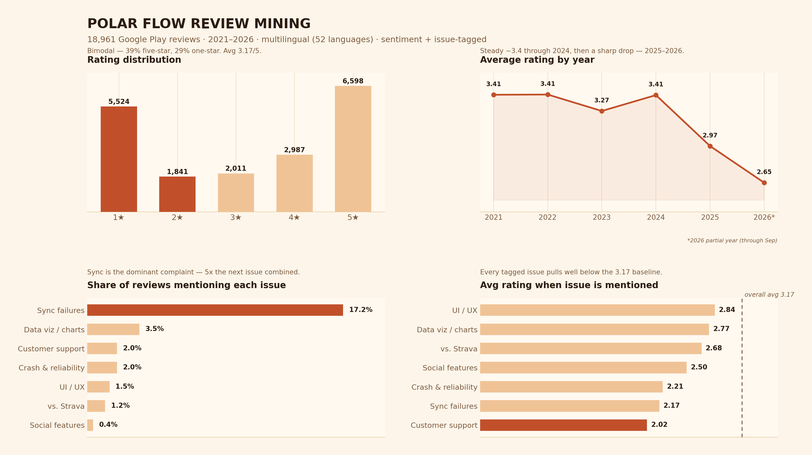
Review data self-collected via the Google Play Store and mined with a Python/pandas pipeline (VADER sentiment scoring, keyword-based issue tagging) — the sync-failure finding (17.2% of all reviews, avg rating 2.17/5 when mentioned) is the empirical evidence behind the app redesign's "stop being dumb middleware" recommendation.
Recorded walkthrough of the redesigned Today dashboard — resting HR, daily goal, steps/distance/active time/calories, and an events feed surfacing sleep, HR peaks, and inactivity alerts in one place.
Information ArchitecturePSD ModelBCSSFigmaIndustrial DesignPython / PandasVADER Sentiment
Health Tech · Servitization Strategy · AI/ML RoadmapIn progress
Topcon Healthcare — Ecosystem & AI Servitization Strategy
Software & AI Strategy Lead · Team project, Product Development course, Univ. of Oulu · Guest-lecturer brief, Topcon Healthcare
3-Tier IMDRF SaMD AI Roadmap
HaaS Pay-per-scan model
FHIR/DICOM Edge-to-Cloud architecture
A servitization and AI-ecosystem proposal for Topcon's ophthalmic device portfolio (Maestro2, NW500, Harmony), built around a real challenge posed by Topcon Healthcare: move beyond one-off hardware sales toward accessible, AI-augmented services for underserved markets and new clinical segments. Led the software/AI strategy: a three-tier regulatory roadmap (synthesis → assistive triage → autonomous diagnosis) grounded in the IMDRF SaMD risk framework and the FDA's IDx-DR/LumineticsCore precedent; a HaaS/pay-per-scan business model to replace upfront capital cost; a multi-lane system architecture diagram; and a zero-training staff workstation & specialist referral portal UX — deliberately scoped so AI surfaces findings for specialist interpretation rather than issuing autonomous diagnoses.
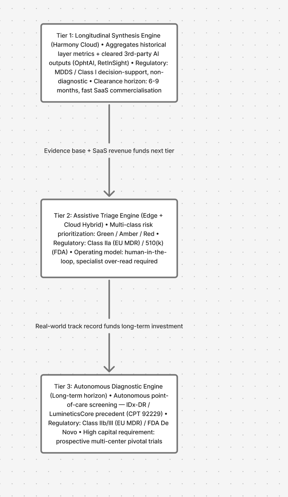
Left: System architecture drawn to standard infrastructure conventions (client / edge / cloud-services / data-store lanes, dotted external integrations). Right: Three-tier regulatory roadmap each service tier is scoped against.
Recorded walkthrough of the Universal Intake screen in the workstation Figma prototype — patient ID/health-card scan, diabetes and sudden-vision-loss triage questions, with a hard branch straight to Urgent Escalation if vision loss in the last 48h is flagged.
Working Prototype · Service Design · 3D / WebGLInteractive Prototype
Harmony Reach — Eye Twin Simulator
Software, AI & Viability Lead · Team project, Product Development course, Univ. of Oulu · Topcon Healthcare case (2026)
A working prototype of a mobile eye-screening service with three connected roles: an operator in a screening van takes an eye photo, a remote doctor reviews a 3D digital twin of that eye, and the patient follows their result with a visit code. Our Figma flow showed the idea, but static screens couldn't show that a photo taken in one place turns up as a 3D model somewhere else, so I built the working version. Concept prototype, not a medical device — the 3D eye is a visual model built from a photo and does not measure or diagnose anything.
01 · Operator (Edge Van)
Intake, then photo capture with pupil centring, an automatic in-browser image-quality check (sharpness, light, glare, centring), and send. Designed for a trained non-specialist driver, not an optometrist.
02 · Remote Doctor
A live queue sorted by urgency, a rotatable 3D eye textured with the patient's real iris, a 3D retina surface built from the fundus photo, visit history, and a Green / Amber / Red triage decision.
03 · Patient Portal
Enters a visit code, follows a plain-language timeline (captured → in review → result), and inspects their own interactive 3D eye twin.
Design decisions: photo quality is checked at the edge, not at the hospital, so a bad photo gets retaken on the spot instead of bringing a patient back. Urgent cases sit at the top of the doctor's queue, which is the emergency path the company asked about. The twin is labelled as a visual model, and the optional AI check is limited to photo quality, never a medical opinion.
UX Manager, UX/UI Designer & Researcher · Solo · Persuasive Systems Design + UX Design & Management, Univ. of Oulu
100% Task completion
8.61 NASA-TLX load (<20 target)
13.7s Avg logging time
A community-supported diabetes management app that shifts users from inconsistent pen-and-paper glucose logging (1–2×/day) to consistent digital monitoring (2–8×/day). Built on a four-layer framework — Behavior Change Support Systems, 18 Persuasive System Design principles, Information Architecture, and an iterative design process — across three pillars: self-monitoring with AI pattern detection, context-aware dialogue support, and opt-in community engagement (peer matching, local exercise groups). Refined the target user to adults 45–70 with Type 2 diabetes after interviews surfaced this group as experiencing the highest diabetes burnout, then validated the prototype through think-aloud usability testing and NASA-TLX cognitive load assessment.
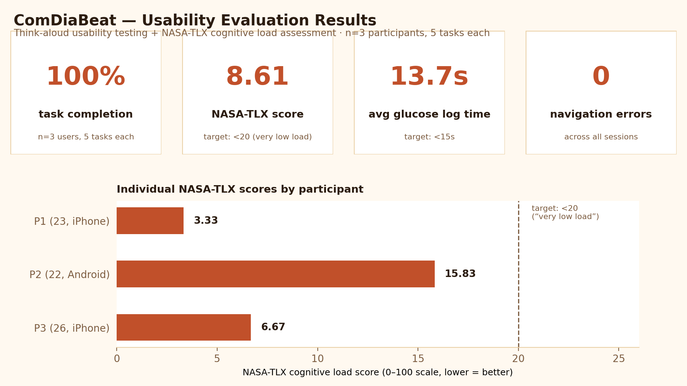
The most interesting finding wasn't the headline number — it's the contrast between very low NASA-TLX (low cognitive load during use) and only partial agreement in open card sorting (mental models didn't fully match before use). That combination means the design teaches itself once someone starts using it, but onboarding needs to bridge first-use expectations.
Walkthrough of the lock-screen notification prototype — Dialogue Support reminder alongside a Social Support community event notification working side by side.
Persuasive Systems DesignBCSSNASA-TLXCard SortingUsability TestingFigma
UI/UX Design & Research · Public TransitIn progress
OSL Mobile App Redesign
UX/UI Designer & Researcher · Solo · Human-Centered Design, Univ. of Oulu
30s → <10s Ticket purchase flow
100% Target WCAG 2.1 AA
4 / 5 Immediate user adoption
An independent evaluation and redesign of Oulu's public transport app (OSL), triggered by friction I hit as a daily rider: a landing page that defaults to "Purchases" instead of Home, a 6–7 step ticket flow taking 30+ seconds, and no accommodation for WCAG 2.1 AA accessibility. I mapped a canonical trip-planning task through Norman's seven-stage interaction cycle to pinpoint exactly where the app breaks down, then redesigned the information architecture (5 tabs → 3, "Buy" and "Purchases" merged into one "Tickets" section), added voice input and a credit/balance system, and tested the mid-fidelity Figma prototype with 5 real users spanning age, tech skill, and disability status.
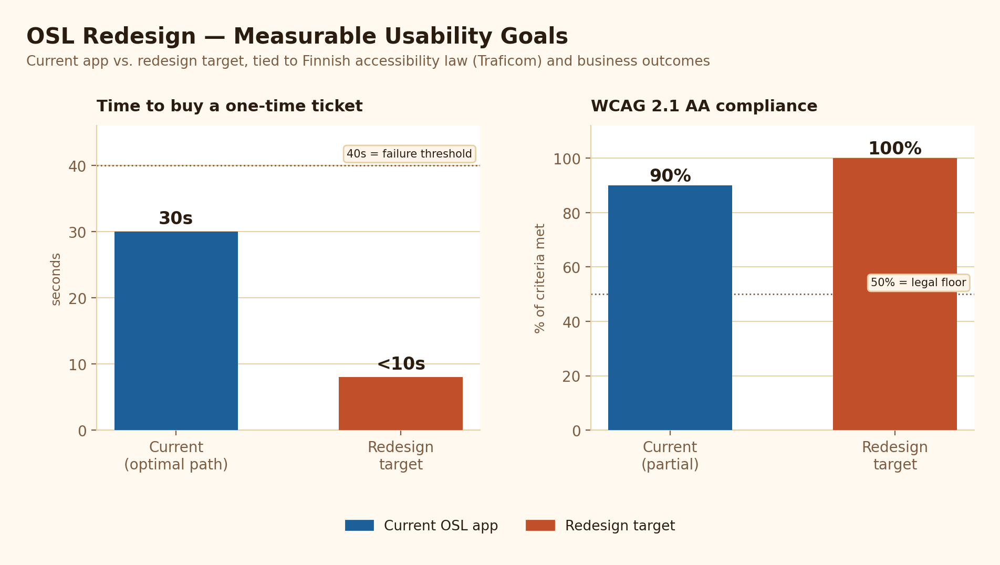
4 of 5 test participants said they'd adopt the redesign outright. The one neutral response — from the oldest participant — became the direct source for a Phase 2 focus: onboarding support for users 50+, alongside an explicit roadmap for color-blind users, screen-reader users, and non-Finnish speakers.
Walkthrough of the redesigned home screen — personalized greeting, "Where to?" quick search, one-tap ticket purchase, active-ticket display, and real-time alert banner across a flattened 3-tab nav.
Comparative Analysis · Business Intelligence · Market StrategyCompleted
Regional App Behaviour — USA vs EU Comparative Analysis
Data Analyst · Solo · Data Analytics and Business Intelligence course, Univ. of Oulu
n = 1,750 Survey responses
+14.9pp US switching gap
+7.8pp US ad-abandonment gap
A comparative analysis of 1,750 Mobile App User Survey responses (Lim, 2014) investigating whether USA (n=324) and EU (n=1,426) users select and abandon apps differently — testing the business case that region-specific acquisition and retention strategies could outperform a one-size-fits-all approach. Built a fully formula-driven Google Sheets pipeline using COUNTIFS to compute per-region percentages across two multi-response questions (12 app-selection criteria, 14 abandonment reasons) from binary-coded raw data, flagging any gap exceeding 5 percentage points as a key finding. The standout result: USA users are markedly more likely to switch after finding a better alternative (36.4% vs 21.5%, +14.9pp) and to abandon apps over ads (50.0% vs 42.2%, +7.8pp), while EU users lean more on official app descriptions (43.5% vs 38.3%).
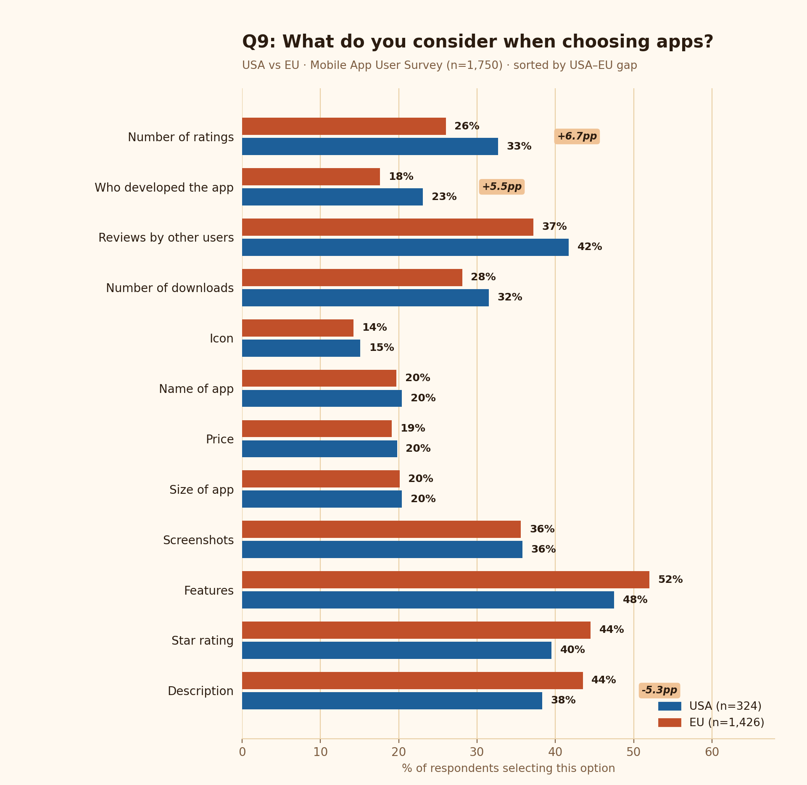
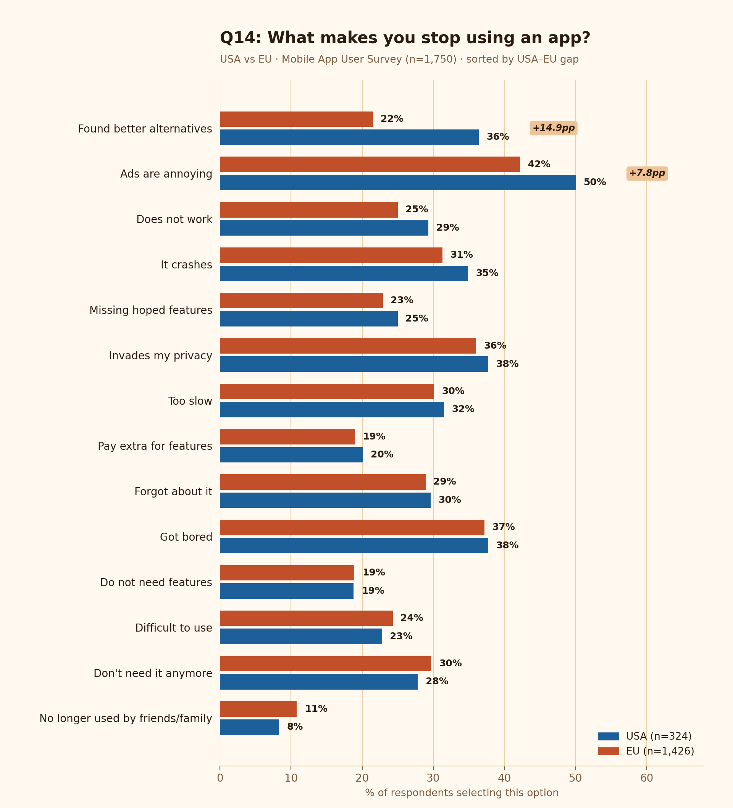
Both charts keep the original analysis's deliberate design choices: blue for USA, orange for EU throughout, sorted by USA–EU percentage-point gap, with only differences exceeding the 5pp significance threshold called out. Every percentage is a live COUNTIFS formula over binary-coded survey responses (n=1,750).
UX/UI Design & Research · Paper PrototypingCompleted
Gmail Interface Redesign
Prototyping Lead · Team of 3 · Human-Centered Design, Univ. of Oulu
76% Faster email scanning
95% Unsend success rate
4 Heuristic evaluators
A human-centered redesign of Gmail Desktop targeting five critical usability gaps affecting 1.8 billion daily users. A Nielsen heuristic evaluation with 4 evaluators traced three of the five problems to the same root cause — critical actions lack a confirmation layer — which shaped the winning concept: an integrated hybrid combining error prevention, efficiency, and customization. As prototyping lead, I built the low-fidelity paper prototype and ran think-aloud usability testing with task-based scenarios across three roles — moderator, processor, observer — catching real friction before a single pixel was designed in Figma.
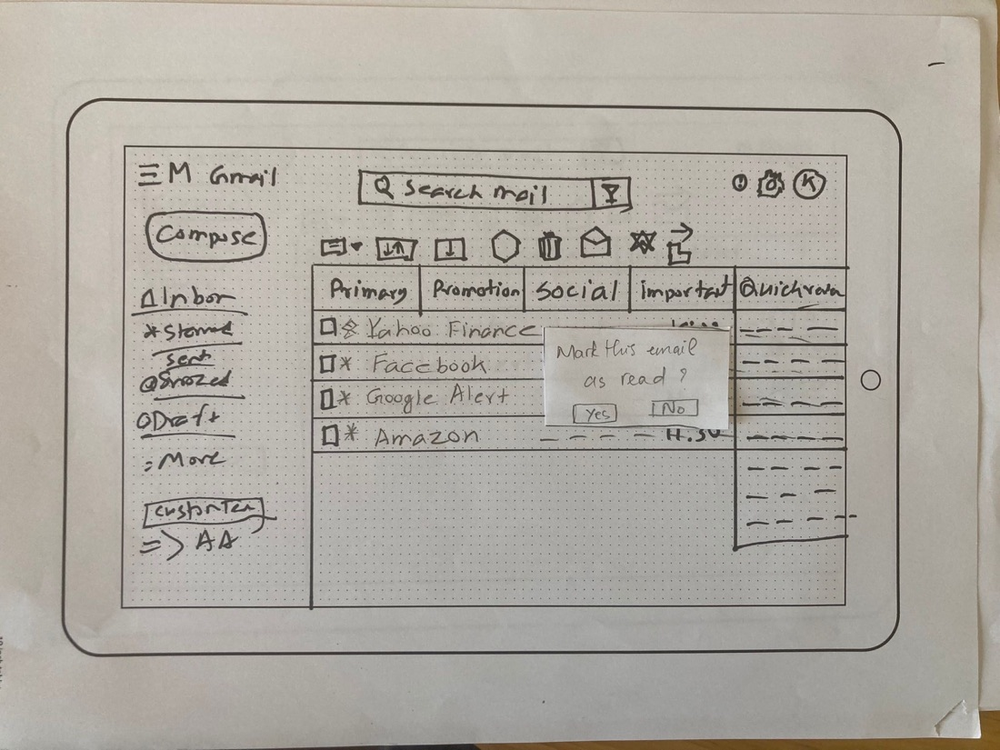
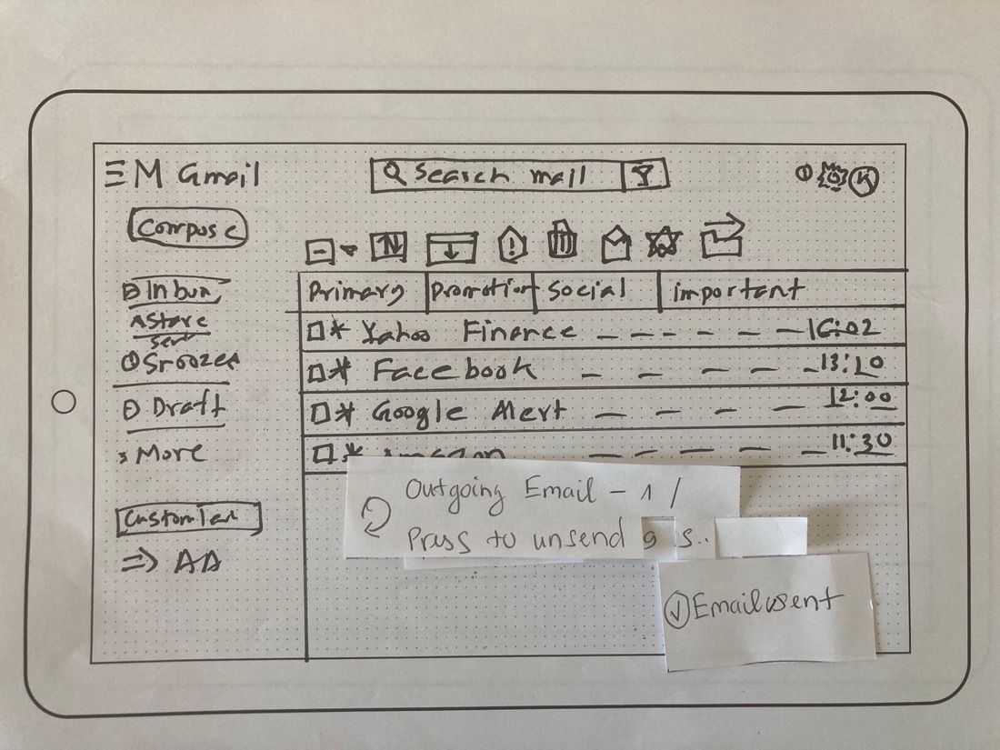
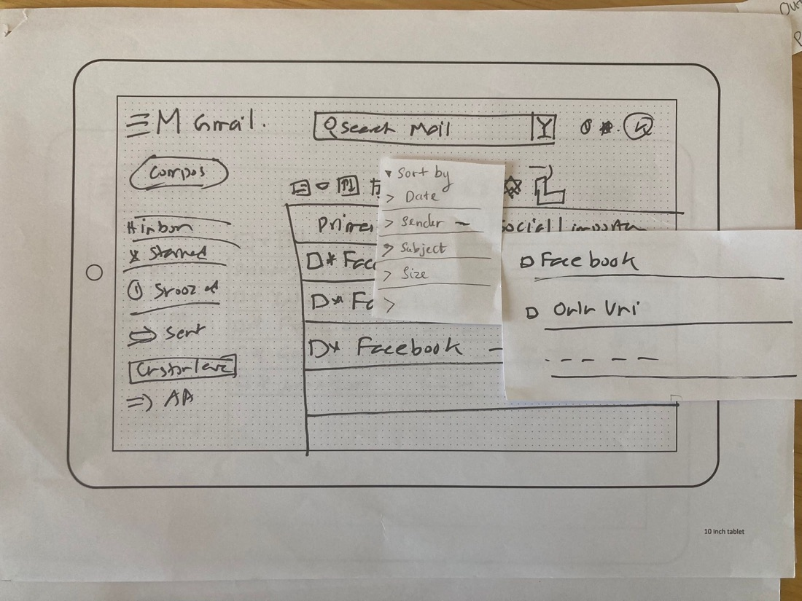
Real paper-prototype test photos — movable sticky notes simulated dynamic UI states (modals, countdowns, dropdowns) for think-aloud testing before any of it existed in Figma. User testing directly reshaped the design twice: the unsend countdown got higher contrast and a larger timer, and sort-dropdown labels were expanded ("Sort by Sender (A→Z)").
Paper PrototypingContextual InquiryStakeholder AnalysisHeuristic Evaluation
System Design · Requirements EngineeringCompleted
Internship Placement Portal (IPP)
Report Author & System Designer · Solo · System Design (812360A-3011), Univ. of Oulu
A stakeholder-driven system design for a platform connecting students, companies, and university placement offices — replacing a scattered process with one unified system: students search, apply in one click, and track applications; companies post roles, review candidates, and verify their account before publishing; the placement office and IT department oversee the pipeline. Specified each use case to implementation depth — preconditions, postconditions, priority, frequency of use, normal course of events, alternative courses, and exception handling — delivered through Agile Scrum with GDPR-compliant data handling built into the requirements from the start.
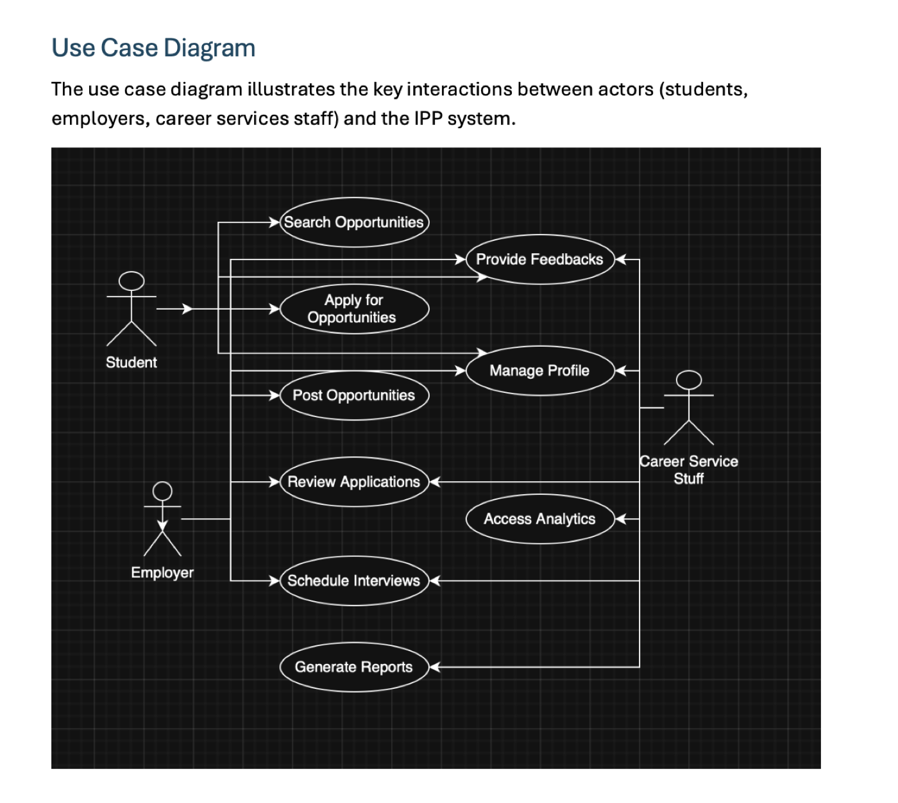
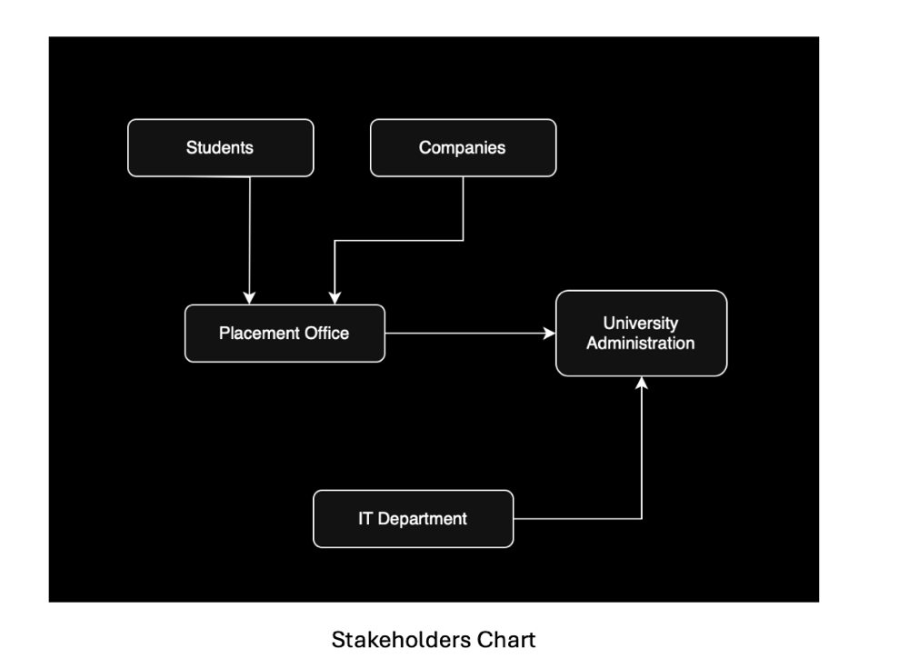
Agile ScrumUse Case SpecificationGDPR ComplianceStakeholder AnalysisER/UML Modeling
System Design · Accessibility ArchitectureCompleted
Ruokakauppa — Product Comparison Platform
Product Owner · Lead for System Requirements & Use Case Specification · Solo · Requirements Engineering (811391A-3020), Univ. of Oulu
A grocery price-comparison concept for the Finnish market, emphasizing price transparency and accessibility. Modeled a 10-entity relational schema (User, Product, Store, Retailer, PriceEntry, FavouriteProduct, PriceAlert, NutritionInfo, ShoppingList, AccessibilityPreference) and a use-case diagram built around accessibility from the ground up — high contrast, text resize, keyboard-only navigation, voice input, and screen reader support as first-class flows. Sequenced the build as a four-release roadmap grouped by feature type and tracked in Taiga using Agile Scrum.
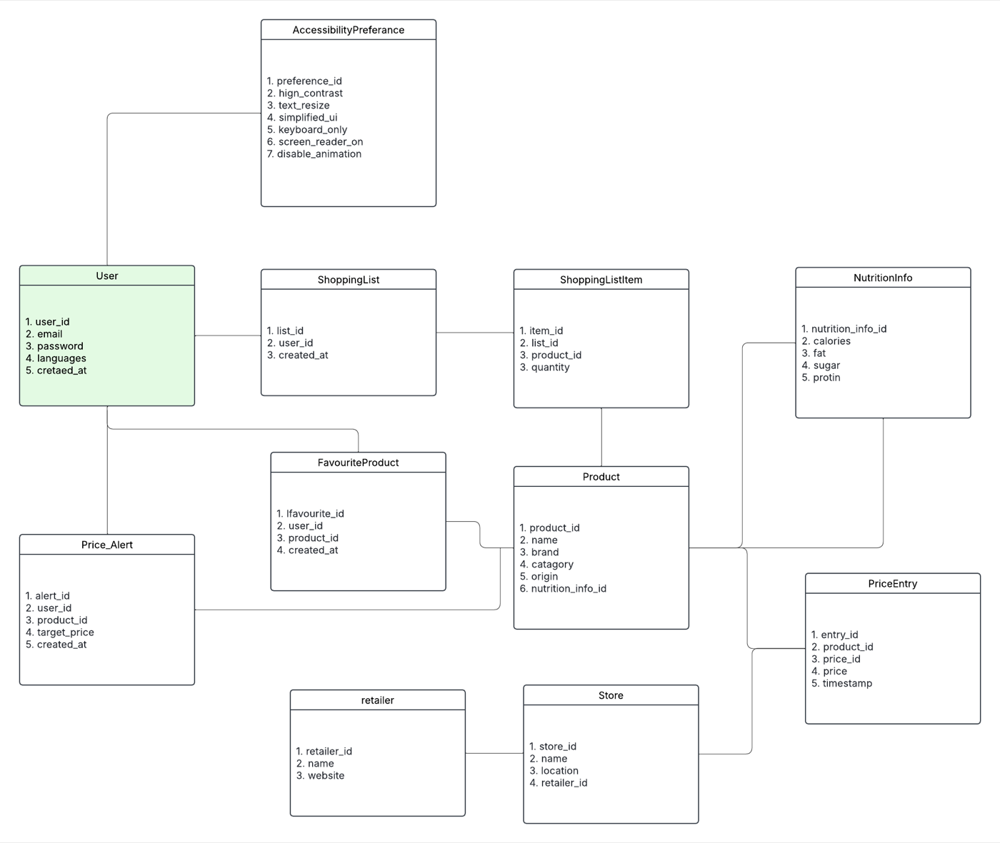
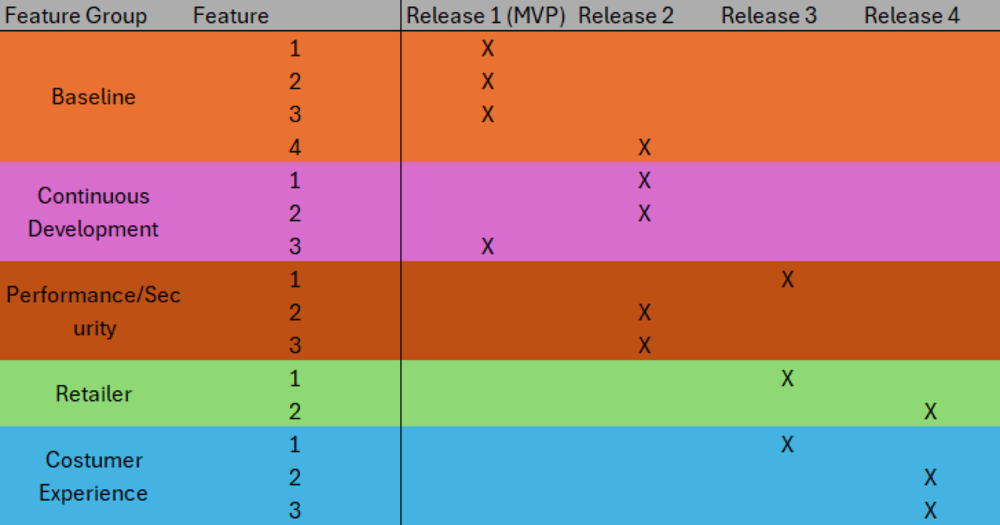
Requirements AnalysisUse Case DevelopmentER/UML ModelingAgile ScrumProduct Roadmapping
Researcher & Author · Solo · ICT and Behaviour Change, Univ. of Oulu
95% Accept consent defaults
6s Avg consent decision time
38 APA 7 peer-reviewed sources
A ~4,500-word literature review (38 sources, APA 7) asking whether GDPR has actually worked as a behaviour-change intervention on European users' platform choices — given that Google, Meta, and Amazon still dominate EU digital markets a half-decade after enforcement. Synthesized findings through the Theory of Planned Behaviour, Persuasive Systems Design, Value-Sensitive Design, and Cognitive Load Theory to argue that GDPR shifted attitudes (privacy awareness is up) but not subjective norms or perceived behavioural control, which still favor the incumbent platforms — so consent flows add cognitive load without producing the deliberate, informed engagement the regulation intended. This review shares its theoretical spine with my Bachelor's thesis, A Comparative Usability Analysis of European and American Digital Platform Design.
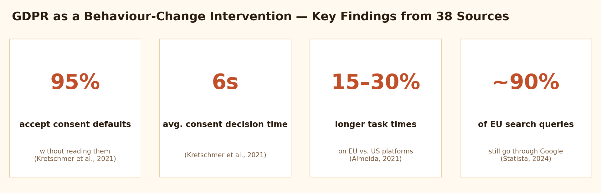
GDPR ComplianceTheory of Planned BehaviourPSD ModelCognitive Load TheoryPolicy Analysis
AIESEC Oulu & Erasmus+ — Student Programmes and Cross-Organisation Events
Local President & Project Manager, AIESEC Oulu ry · Erasmus+ Project Advisor, Europeers Finland / EDUFI · Oulu, Finland (Nov 2024–Present)
Lead a cross-functional team of 30+ at AIESEC Oulu, supervising OAMK students through mandatory internship placements while planning and delivering recurring events with external partners: Beyond Borders (with Europeers Finland), Beyond Borders 2.0 (with Business Corner OAMK), two AIESEC Induction events (Spring/Fall), and the Volunteer Work Opportunity Fair (with International House Oulu). In parallel, work as an advisor for the Finnish National Agency for Education (EDUFI) on Erasmus+ project development across the KA153, KA154, and KA210 project types, helping partner NGOs design and structure EU-funded youth and education projects.
Analyst & Contributor · Team project · Univ. of Oulu
An OCTAVE Allegro risk assessment of Netflix's information security posture — an asset-driven methodology that identifies critical information assets first, then maps the threats, vulnerabilities, and business impact specific to each one, rather than starting from a generic threat checklist. GDPR compliance considerations (cross-border data transfer, subscriber data handling, breach-notification obligations) were woven through the risk register rather than treated as a separate compliance appendix.
Led the UX analysis and information-architecture work behind a full redesign of the AIESEC Oulu website, coordinated alongside a cross-functional volunteer team and tracked through a dedicated Jira project (AOW) covering scope, sprints, WCAG 2.1 AA accessibility compliance, and handoff documentation.
Analyst · Solo · Persuasive Systems Design, Univ. of Oulu
An evaluation of Strava through the Persuasive System Design (PSD) model, analyzing how the app's behavioral-psychology mechanics — segments, kudos, streaks, and social comparison — drive engagement, and where those same mechanics risk tipping from motivating into manipulative.
PSD ModelBehavioral PsychologySystem Evaluation
3D Development · Real-Time RenderingShipped
Unity Essential WebGL Project
Developer · Solo · Independent project
A WebGL-based 3D project built in Unity, exploring game development fundamentals, physics interactions, and real-time rendering — built and shipped as a playable browser build, not just an editor screenshot.
Public Sector Research · Digital TransformationCompleted
Open Source & Open Data in Public Services
Researcher · Solo · Technology Innovation & Business (811178P-3007), Univ. of Oulu
An academic research paper on the impact of open source and open data adoption on digital transformation in public-sector services, examining governance and policy barriers alongside the technical case for adoption.
Data GovernanceDigital TransformationPolicy Analysis
Environmental Data ResearchCompleted
Baltic Sea Climate Impact Study
Researcher · Solo · Climate Now, Tampere University
Environmental research synthesizing published long-term datasets on Baltic Sea climate impact: near-exponential grey seal population growth across Finnish, Swedish, and Estonian census sites since 1990; a 3.6%/year decline in southern Baltic bacterioplankton biomass between 1988–2007, attributed to improved water management; and a Baltic/North Sea sea-surface warming trend of 0.029°C/year from 1993–2022 (Copernicus Marine Service data), with the northern Baltic projected to warm 2–4°C by 2100.
Co-founded a registered Finnish association focused on digital literacy, AI literacy, youth participation, and civic engagement.
Directing organizational governance, regulatory compliance, budgeting, and Erasmus+ grant proposals (KA152, KA153, KA210) with partner organizations across Europe
Nov 2025 — Apr 2026
Hospitality & Resort Operations
Seasonal
Safartica Oy · Rovaniemi, Finland
Worked in high-tempo Lapland winter tourism operations alongside full-time university coursework.
Nov 2024 — Jan 2026
Local Committee President, Project Manager & Internship Supervisor
30+ Member Team
AIESEC Oulu ry · Oulu, Finland
Led a cross-functional team of 30+ across recruitment, training, international exchange projects, and municipal/university partnerships.
Supervised 4 OAMK university interns and designed structured onboarding connecting academic learning with practical project delivery
Coordinated a 3-developer website redesign using Agile Scrum and Jira, delivering WCAG 2.1 AA accessibility compliance
Organized the "Beyond Borders" and "Beyond Borders 2.0" international collaboration events in Oulu
Established strategic partnerships with International House Oulu, Europeers Finland (EDUFI), and Business Corner OAMK
Facilitated educational workshops, digital civic tools, and community programs across multicultural environments in Poland and Portugal.
Designed and shipped Trivial Lezíria Europeia 2.0 for Portuguese high schools under Erasmus+ KA154
Supported organizations through visual communications, cultural events, and international youth exchanges — including a Bangladeshi Cultural & Photography Exhibition and community garden initiatives
Taught Bengali language and literature workshops
Nov 2024 — Apr 2025
Restaurant Crew
Seasonal
McDonald's Rovaniemi Lampela · Finland
High-volume service operations at Finland's busiest Arctic Circle McDonald's location.
Sustainable Urban Development Degree Program Committee & Urbanum ry · Tampere University
Collected student cohort feedback, facilitated curriculum dialogue with faculty, built corporate sponsor partnerships, and organized professional development events.
04 · Academic Community & Conferences
Conferences & HCI Community
HCI ConferenceVaasa, Finland · 3–7 Oct 2026
NordiCHI 2026 — Student Volunteer
Nordic Conference on Human-Computer Interaction
Volunteered at NordiCHI 2026, the premier Nordic conference on Human-Computer Interaction, hosting paper sessions, a critiques session, and a hands-on tutorial — gaining a front-row view of how contemporary HCI research is presented, questioned, and debated in real time.
BSc in Information Processing Science — Software Engineering & Information Systems (DICE)
University of Oulu
Focus: Human-Computer Interaction, Persuasive Systems Design, UX Research & Management, System Design, Requirements Engineering, Business Process Management (Grade 5/5), Data Analytics & BI, Inclusive Design, Cognitive Load, Digital Sovereignty & Privacy-Preserving Design.
Bachelor's Thesis: Systematic literature review & comparative usability analysis of Persuasive Systems Design (Rewards vs. Social Support) and EU/US digital platform design.
Aug 2023 – Jul 2024 · Tampere, Finland
BSc in Sustainable Urban Development (Technology Track)
Tampere University (Transferred to Univ. of Oulu)
Urban Economics, Empirical Social Research, Climate Now, Management & Organizations, Student Representative on the Degree Program Committee.
Jul 2018 – Jan 2021 · Dhaka, Bangladesh
Higher Secondary Certificate (Science)
Notre Dame College, Dhaka
06 · Contact
Let's build thoughtful, human-centered systems.
Reach out about Product Management, UX/HCI research collaborations, graduate research opportunities, or just to swap top-tier memes.
![Topcon Pulse-Eye software system architecture diagram: a Point of Care lane (NW500/Maestro2 health workstation) feeding an embedded edge runtime, connected via HTTPS/TLS 1.3/FHIR/DICOM to a Harmony Cloud Services lane containing the multimodal inference pipeline, smart referral matching, operator console, specialist portal, and micro-billing services, writing to an IDHea governance/audit log and a clinical imaging data store, with dotted lines to external Stripe/clearinghouse and third-party AI partner integrations.](assets/topcon-system-architecture.png)